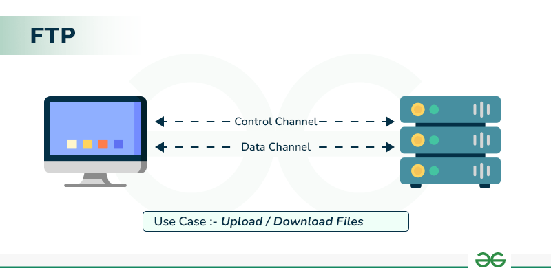

FTP (File Transfer Protocol) is a standard network protocol used for the transfer of computer files from a server to a client on a network.
FTP operates on the client-server model, where a client can connect to an FTP server to upload or download files. It uses two separate channels for communication: a command channel for sending commands and a data channel for transferring files.
FTP is commonly used for website maintenance, file sharing, and data backup. It allows users to access and manage files on a remote server, making it an essential tool for web developers and administrators.

However, it is not secure and does not encrypt data, making it vulnerable to eavesdropping and other security threats.
For this reason, more secure alternatives like SFTP (SSH File Transfer Protocol) and FTPS (FTP Secure) are often preferred.